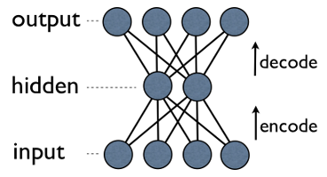

Autoencoders
Autoencoders have been one of those things that I've always heard about, but never used them. They seems to be quite big in the online learning (deep learning courses like the one from Hinton) and even in the books (I am looking at you, Goodellow) but at the same time, I have yet to find someone who has used them to do something useful (I am talking about the vanilla version, not the variational ones which are almost a different things). I've also heard that they are a form of unsupervised learning, a way of getting good representation of objects in an unsupervised way. So, I decided to implement a simple autoencoder and see what's the fuss about. I also thought that this might be a good Tensorflow exercise (I have been using PyTorch on the last few months, a library I am really loving).
On its basic form, autoencoders are a simple concept. The idea here is to map the input to output, via a neural network. A simple choice of a neural network, might be a fully connected neural network, with a hidden layer and an output layer, where the number of units in the output layer is the same as tbe number of units (features) in the input layer. A visual representation of an autoencoder looks:
